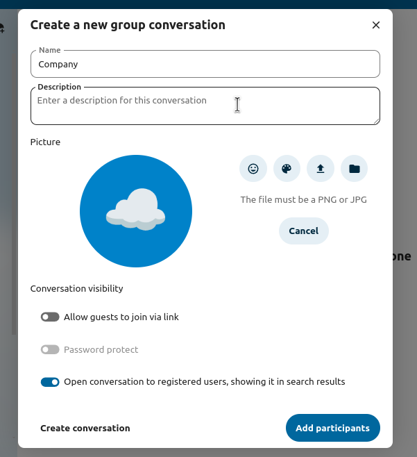
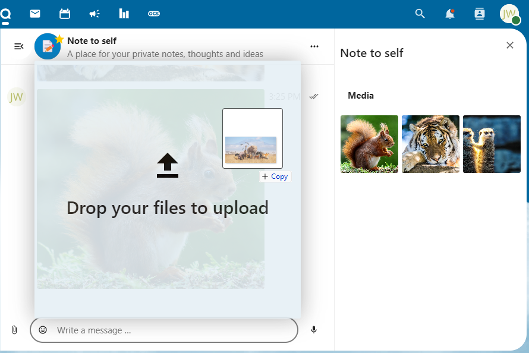
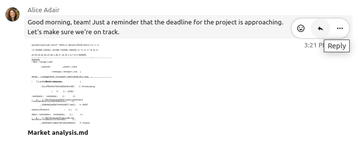
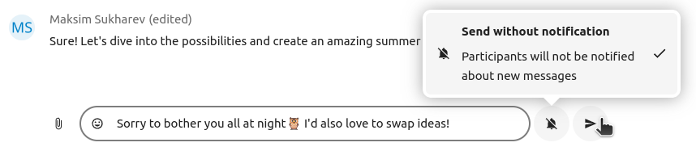

Grundlagen von Nextcloud Talk
Mit Nextcloud Talk können Sie auf Ihrem eigenen Server chatten und Videoanrufe führen.
Chats und Anrufen finden in Unterhaltungen statt. Sie können beliebig viele Unterhaltungen erstellen. Es gibt zwei Arten von Unterhaltungen:
Einzelgespräche: Hier führen Sie einen privaten Chat oder Anruf mit einem anderen Talk-Benutzer. Sie können keine anderen Personen zu diesem Gespräch hinzufügen oder es mit einem Link teilen. Sie beginnen einen direkten Einzel-Chat, indem Sie in der Suchleiste nach einem anderen Benutzer suchen und dann auf dessen Namen klicken.
Gruppengespräche. An einem Gruppengespräch können neben der Person, die das Gespräch erstellt hat, beliebig viele Personen teilnehmen. Eine Gruppenkonversation kann öffentlich mit einem Link geteilt werden, so dass externe Gastnutzer an einem Gespräch teilnehmen können. Sie kann auch aufgelistet werden, so dass andere Personen auf Ihrem Nextcloud-Server an der Unterhaltung teilnehmen können.
Einen Chat erstellen
You can create a direct, one-on-one chat by searching for the name of a user, a group or a team and clicking it. For a single user, a conversation is immediately created and you can start your chat. For a group or circle you get to pick a name and settings before you create the conversation and add the participants.

If you want to create a custom group conversation, click the button next to the search field and filters button and then on Create a new conversation.

Sie können dann einen Namen für die Unterhaltung auswählen, eine Beschreibung hinzufügen und einen Avatar dafür einrichten (mit hochgeladenem Foto oder Emoji). Weiter können Sie auswählen, ob die Unterhaltung für externe Benutzer geöffnet sein soll und ob andere Benutzer auf dem Server diese sehen und dem Gespräch beitreten können.
{kind=link}
Im zweiten Schritt fügen Sie die Teilnehmer hinzu und stellen die Unterhaltung fertig.

After confirmation you will be redirected to the new conversation and can start communicating right away.

Alle offenen Unterhaltungen anzeigen
You can view all the conversations that you can join by clicking the button next to the search field and filters button and then on Join open conversations.

Filtern Sie Ihre Unterhaltungen
Sie können Ihre Unterhaltungen mithilfe der Filterschaltfläche neben dem Suchfeld filtern. Es gibt zwei Optionen zum Filtern: 1. Ungelesene Erwähnungen filtern: Mit dieser Option können Sie Gruppengespräche mit ungelesenen Erwähnungen oder ungelesenen Einzelgesprächen anzeigen. 2. Ungelesene Nachrichten filtern: Mit dieser Option können Sie alle ungelesenen Nachrichten in allen verbundenen Unterhaltungen anzeigen.

Anschließend können Sie den Filter im Filtermenü löschen.

Dateien in einem Chat teilen
Sie können Dateien in einem Chat auf drei Arten teilen.
Erstens können Sie die Dateien einfach per Drag’n’Drop in den Chat ziehen.
Zweitens können Sie eine Datei aus Ihren Nextcloud-Dateien oder einem Dateimanager auswählen, indem Sie auf die kleine Büroklammer klicken und auswählen, aus welchem Ordner Sie die Datei holen möchten.


You can add more files until you are done and decide to share the files. You can also add a text caption to your shared files, providing a brief description or context.

Alle Benutzer können auf die Dateien klicken, um sie anzusehen, zu bearbeiten oder herunterzuladen, unabhängig davon, ob sie ein Benutzerkonto haben. Für Benutzer mit einem Konto wird die Datei automatisch freigegeben, während sie für externe Gastnutzer als öffentlicher Link freigegeben wird.

Emoji einfügen
Sie können Emojis mit der Auswahlfunktion auf der linken Seite des Texteingabefelds hinzufügen.

Editing messages
You can edit messages and captions to file shares up to 6 hours after sending.

Using Markdown
You can enhance your messages with a markdown syntax support. See list for usage:
Headings and dividers
# Heading 1
## Heading 2
### Heading 3
#### Heading 4
##### Heading 5
###### Heading 6
Heading
===
Normal text
***
Normal text
Inline decorations
**bold text** __bold text__
*italicized text* _italicized text_
`inline code` ``inline code``
```
.code-block {
display: pre;
}
```
Lists
1. Ordered list
2. Ordered list
* Unordered list
- Unordered list
+ Unordered list
Quotes
> blockquote
second line of blockquote
Task lists
- [ ] task to be done
- [x] completed task
Tables
Column A | Column B
-- | --
Data A | Data B
Setting reminder on messages
You can set reminders on specific messages. If there’s an important message you want to be notified about later, simply hover over it and click on the reminder icon.

In the submenu, you can select an appropriate time to receive a notification later.

Auf Nachrichten antworten und mehr
Sie können auf eine Nachricht antworten, indem Sie den Pfeil benutzen, der erscheint, wenn Sie den Mauszeiger über eine Nachricht bewegen.
{kind=link}
Im Menü ... können Sie auch wählen, ob Sie privat antworten wollen. Dadurch wird ein Chat unter vier Augen eröffnet.

Hier können Sie auch einen direkten Link zu der Nachricht erstellen oder sie als ungelesen markieren, so dass Sie beim nächsten Mal, wenn Sie den Chat betreten, dorthin zurückblättern können. Wenn es sich um eine Datei handelt, können Sie die Datei unter Dateien anzeigen.
Silent messages
If you don’t want to disturb anyone in the middle of the night, there is a silent mode for chatting. While it is enabled, other participants will not receive notifications from your messages.
{kind=link}
Eine Unterhaltung verwalten
Sie sind immer Moderator in Ihrer neuen Unterhaltung. In der Teilnehmerliste auf der rechten Seite können Sie andere Teilnehmer über das Menü ... rechts neben ihrem Benutzernamen zu Moderatoren ernennen, ihnen benutzerdefinierte Berechtigungen zuweisen oder sie aus der Unterhaltung entfernen.
Durch das Ändern der Berechtigungen eines Benutzers, der einer öffentlichen Konversation beigetreten ist, wird dieser auch dauerhaft zur Konversation hinzugefügt.

Moderatoren können die Unterhaltung konfigurieren. Wählen Sie Unterhaltungseinstellungen aus dem Menü ... der Unterhaltung oben, um auf die Einstellungen zuzugreifen.

Hier können Sie die Beschreibung, den Gastzugang, ob die Unterhaltung für andere auf dem Server sichtbar ist, und mehr konfigurieren.

Messages expiration
A moderator can configure message expiration under the Conversation settings within the Moderation section. Once a message reaches its expiration time, it is automatically removed from the conversation.
The available expiration durations are 1 hour, 8 hours, 1 day, 1 week, 4 weeks, or never (which is the default setting).

Einen Anruf beginnen
Wenn Sie sich in einer Unterhaltung befinden, können Sie jederzeit über die Schaltfläche Anruf starten einen Anruf starten. Andere Teilnehmer werden benachrichtigt und können dem Anruf beitreten.

Wenn bereits jemand anderes einen Anruf gestartet hat, ändert sich die Schaltfläche in eine grüne Schaltfläche Anruf beitreten.

Während eines Anrufs können Sie Ihr Mikrofon stummschalten und Ihr Video mit den Schaltflächen auf der rechten Seite der oberen Leiste deaktivieren oder mit den Tastenkombinationen M zum Stummschalten von Audio und V zum Deaktivieren von Video verwenden. Sie können auch die Leertaste verwenden, um die Stummschaltung zu aktivieren. Wenn Sie stummgeschaltet sind, können Sie durch Drücken der Leertaste die Stummschaltung aufheben, so dass Sie sprechen können, bis Sie die Leertaste loslassen. Wenn die Stummschaltung aufgehoben ist, werden Sie durch Drücken der Leertaste stummgeschaltet, bis Sie die Leertaste loslassen.
Mit dem kleinen Pfeil über dem Videostream können Sie Ihr Video ausblenden (nützlich bei einer Bildschirmfreigabe). Mit dem kleinen Pfeil können Sie es wieder einblenden.
Sie können auf Ihre Einstellungen zugreifen und eine andere Webcam, ein anderes Mikrofon und andere Einstellungen im Menü ... in der oberen Leiste auswählen.
{kind=link}
From media settings dialog, you can also change the background of your video.

Weitere Einstellungen können Sie im Dialog Unterhaltungseinstellungen ändern.

Eine Bildschirmfreigabe starten
You can click the monitor icon on your video stream to share your screen. Depending on your browser, you will get the option to share a monitor, an application window or a single browser tab. If video from your camera is also available, other participants will see it in a small presenter view next to the screen share.

Die Ansicht in einem Anruf wechseln
Sie können die Ansicht während eines Anrufs mit dem kleinen Vier-Block-Symbol oben rechts zwischen der Sprecheransicht und der Kachelansicht wechseln. In der Rasteransicht werden alle Personen gleich groß angezeigt. Wenn die Personen nicht auf den Bildschirm passen, werden links und rechts Schaltflächen angezeigt, mit denen Sie navigieren können.

Die Sprecheransicht zeigt den Sprecher groß und die anderen in einer Reihe darunter. Wenn die Personen nicht auf den Bildschirm passen, werden links und rechts Schaltflächen angezeigt, mit denen Sie navigieren können.